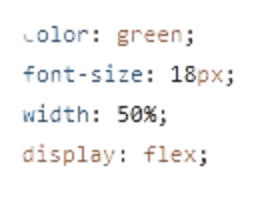
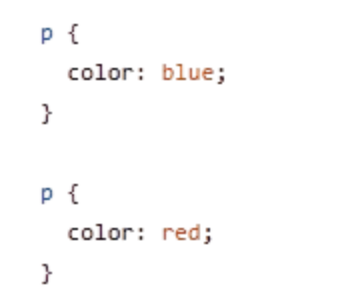
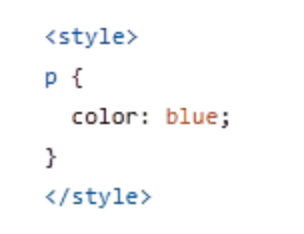

Essa pagina irá falar sobre o CSS a seguir:
CSS é a sigla para Cascading Style Sheets, que em português significa “Folhas de Estilo em Cascata”. Ele é uma das principais tecnologias usadas na construção de páginas da web, junto com HTML.
Ou seja, o CSS é responsável por toda a parte visual e estética de um site. Sem CSS, as páginas existiriam, mas seriam bem simples, com aparência básica e pouco atraente.
Como o CSS funciona?
O CSS funciona aplicando regras de estilo aos elementos HTML. Essas regras são compostas por:
Seletores(Indicam qual elemento será estilizado.)
Propriedades(O que você quer mudar.)
Valores(Como você quer que fique.)
O que é um seletor?
Um seletor é a parte da regra CSS que “aponta” para um ou mais elementos da página.
1. Seletor de elemento (ou tag):
Seleciona todos os elementos de um tipo.
2. Seletor de classe:
Muito usado. Permite estilizar vários elementos com a mesma classe.
3. Seletor de ID:
Seleciona um elemento único (idealmente só um por página)
4. Seletor universal:
Seleciona todos os elementos.
5. Seletor descendente:
Seleciona elementos dentro de outros.
6. Seletor filho direto:
Seleciona apenas filhos diretos.
7. Seletores de atributo:
Selecionam elementos com base em atributos
8. Pseudo-classes:
Definem estados especiais dos elementos
9. Pseudo-elementos:
Estilizam partes específicas de um elemento
Especificidade (quem “vence”?)
Se dois seletores tentarem estilizar o mesmo elemento, o CSS usa uma regra chamada especificidade.
Especificidade (specificity) no CSS é a regra que decide qual estilo será aplicado quando vários estilos tentam modificar o mesmo elemento.
O CSS calcula uma “força” para cada seletor.
Quanto mais específico ele for, maior a prioridade.
O que são propriedades?
Propriedades são características que você quer modificar em um elemento.
| color |
background-color |
font-size |
width |
height |
margin |
padding |
border |
display |
position |
| cor do texto |
cor de fundo |
tamanho da fonte |
largura |
altura |
espaço externo |
espaço interno |
borda |
tipo de exibição |
posicionamento |
O que são valores?
Valores definem como a propriedade será aplicada.
Exemplo:

Os valores aqui são:
-Green
-18px
-50%
-flex
Tipos de valores no CSS:
1. Cores
2. Tamanhos
3. Texto
4. Layout
CSS em cascata:
O nome “Cascading” significa que o CSS segue prioridades.
Exemplo:

Formas de usar CSS:
1. Inline
2. Interno

3. Externo (mais usado)